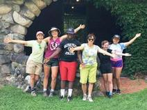

There are many efforts towards sustainability in the city of Waltham.
The Waltham Land Trust is a charitable organization that aims to create a legacy of land conservation in Waltham by promoting, protecting, restoring, and acquiring open space.
Waltham has joined the list of 25 communities designated as part of the "Green Community" program. The city of Waltham was awarded $281,080 to be used to improve Waltham by implementing energy efficiency and renewable energy programs. To be considered for the Green Community Designation grant, a municipality has to meet five specified criteria and submit a project application.
The Youth Environment Entrepreneurship Program (YEEP) is an environmental enrichment program geared towards high school and college youths to engage and empower them to act positively for both the environment and themselves by building a service business that provides native plants to the inhabitants of the city of Waltham.
The Waltham Green Project